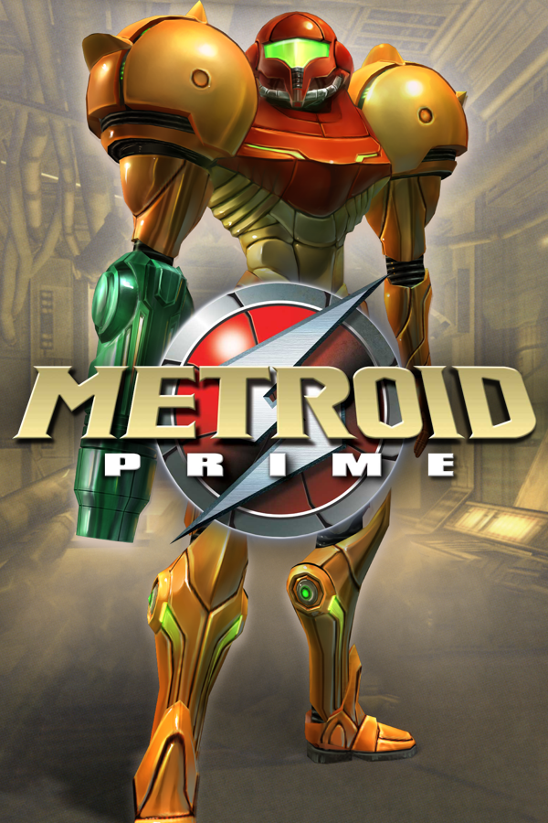

Metroid Prime
Metroid Prime
Details
|  | |
| Playtime | Not Played |
| Last Activity | Never |
| Added | 4/29/2025 4:51:34 |
| Modified | 4/29/2025 23:40:12 |
| Completion Status | Not Played |
| Library | Playnite |
| Source | |
| Platform | Nintendo Entertainment System |
| Release Date | 11/18/2002 |
| Community Score | 71 |
| Critic Score | 96 |
| User Score | |
| Genre | Action-adventure |
| Developer | Retro Studios |
| Publisher | Nintendo |
| Feature | Single Player |
| Links | PCGamingWiki IGDB MobyGames Wikipedia |
| Tag | Metaforce |
Description
Metroid Prime is a 2002 action-adventure game developed by Retro Studios and published by Nintendo for the GameCube. Metroid Prime is the fifth main Metroid game and the first to use 3D computer graphics and a first-person perspective. It was released in North America in November 2002, and in Japan and Europe the following year. Along with the Game Boy Advance game Metroid Fusion, Prime marked the return of the Metroid series after an eight-year hiatus following Super Metroid (1994).
Metroid Prime takes place between the original Metroid and Metroid II: Return of Samus. Players control the bounty hunter Samus Aran as she battles the Space Pirates and their biological experiments on the planet Tallon IV. Metroid Prime was a collaboration between Retro in Austin, Texas, and Japanese Nintendo employees, including producers Shigeru Miyamoto and Kensuke Tanabe. Miyamoto suggested the project after visiting Retro's headquarters in 2000. Since exploration takes precedence over combat, Nintendo described the game as a "first-person adventure" rather than a first-person shooter.
Metroid Prime sold more than 2.8 million copies worldwide. It won a number of Game of the Year awards and is regarded by many as one of the greatest video games, remaining one of the highest-rated games on Metacritic.
Metroid Prime was followed by Metroid Prime 2: Echoes (2004) and Metroid Prime 3: Corruption (2007), with Metroid Prime 4: Beyond scheduled for 2025. In 2009, an enhanced version of Metroid Prime was released for the Wii in Japan and as part of the Metroid Prime: Trilogy compilation internationally. A remastered version was released on the Nintendo Switch in 2023.
Gameplay
Metroid Prime is an action-adventure game in which players control protagonist Samus Aran from a first-person perspective, unlike previous games in the Metroid series, with third-person elements used for Morph Ball mode. The gameplay involves solving puzzles to reveal secrets, platform jumping, and shooting foes with the help of a "lock-on" mechanism that allows circle strafing while staying aimed at the enemy.
Samus must travel through the world of Tallon IV searching for twelve Chozo Artifacts that will open the path to the Phazon meteor impact crater, while collecting power-ups that let her reach new areas. The Varia Suit, for example, protects Samus' armor against high temperatures, allowing her to enter volcanic regions. Some items are obtained after boss fights. Items must be collected in a specific order; for example, players cannot access certain areas until they find a certain Beam to open doors, or discover new ordnance with which to beat bosses. Players are incentivized to explore to find upgrades that increase Samus' maximum ammunition and health.
The heads-up display, which simulates the inside of Samus' helmet, features a radar display, a map, ammunition for missiles, a health meter, a danger meter for negotiating hazardous landscape or materials, and a health bar and name display for bosses. The display can be altered by exchanging visors; one uses thermal imaging, another has x-ray vision, and another features a scanner that searches for enemy weaknesses and interfaces with mechanisms such as force fields and elevators. The game introduces a hint system that provides the player with clues about ways to progress through the game.
By connecting Prime with Metroid Fusion using a GameCube – Game Boy Advance link cable, players can unlock Samus's Fusion Suit as an optional cosmetic, as well as a playable emulation of the original Metroid game.
Items
Throughout the game, players must find and collect items that improve Samus' arsenal and suit, including weapons, armor upgrades for Samus' Power Suit and items that grant abilities—including the Morph Ball, which allows Samus to compress herself into a ball in order to roll into narrow passages and drop energy bombs, and the Grapple Beam, which works by latching onto special hooks called grapple nodes, allowing Samus to swing across gaps. Unlike those in earlier games in the series, the beam weapons in Metroid Prime have no stacking ability, in which the traits of each beam merge. Instead, the player must cycle the four beam weapons; there are charge combos with radically different effects for each. Other upgrades include boots that allow Samus to double-jump and a Spider Ball upgrade that allows her to climb magnetic rails.
Items from previous Metroid games appear with altered functions. Art galleries and different endings are unlockable if the player collects a high percentage of items and Scan Visor logs. Prime is one of the first Metroid games to address the reason Samus does not start with power-ups acquired in previous games; she begins the game with some upgrades, including the Varia Suit, Missiles and Grapple Beam, but they are lost during an explosion on the Space Pirate frigate Orpheon. The producers stated that starting with some power-ups was a way to give the player "different things to do" and to learn the functions of these items before settling into the core gameplay.
Plot
Setting
Retro Studios wrote an extensive storyline for Metroid Prime, which was considered a major difference from previous Metroid games. Short cutscenes appear before important battles, and a scanner in the heads-up display extracts backstory-related information from objects. The Prime trilogy is set between the events of Metroid and Metroid II.
The game takes place on the planet Tallon IV, formerly inhabited by the Chozo race. Five decades ago, the Chozo race fell after a meteor impacted on Tallon IV. The meteor contaminated the planet with a corruptive, mutagenic substance that the Space Pirates later named Phazon, and also brought with it a creature known to the Chozo as "The Worm". A large containment field emitter of the Artifact Temple in the Tallon Overworld area was built as a seal to the meteor's energies and influence within the crater where it landed, which the Space Pirates attempt to disable or bypass in order to gain better access to extract the Phazon. The containment field is controlled by twelve Chozo artifacts that are scattered around the planet.
Samus Aran intercepts a distress signal from the Space Pirate frigate Orpheon, whose crew have been slaughtered by the Pirates' own genetically modified, experimental subjects, using a mysterious radioactive substance called Phazon. At the ship's core, she battles with the Parasite Queen, a giant version of the tiny parasites aboard the ship. The Parasite Queen is defeated and falls into the ship's reactor core, initiating the destruction of the ship. While Samus is escaping from the frigate, she encounters a cybernetic version of Ridley called Meta Ridley, who also escapes. During her escape, an explosion damages Samus' suit, causing some of her abilities to malfunction. Samus escapes the frigate and chases Ridley in her gunship towards the nearby planet Tallon IV.
After landing in the Tallon Overworld, Samus explores nearby areas of Tallon IV and discovers ruins of an ancient Chozo settlement. As she explores the ruins, she learns that the Chozo on the planet had been killed off by the Phazon infesting the planet, which originated from a meteor that impacted on the planet many years ago. After regaining her lost abilities in the ruins, as well as defeating a mutated plant creature that was poisoning the local water supply, Samus finds her way to the Magmoor Caverns, a series of magma-filled tunnels, which are used by the Space Pirates as a source of geothermal power. Following the tunnels, Samus travels to the Phendrana Drifts, a cold, mountainous region which is home to another ancient Chozo ruin and a Space Pirate research laboratory used to study the Metroids. After obtaining new abilities, Samus explores the wreckage of the crashed Orpheon and then infiltrates the Phazon Mines, where she learns the outcome of the Phazon experimentation project, including the Metroid Prime, a creature that had come to Tallon IV with the meteor. Advancing deeper into the mines, Samus fights her way through the Phazon-enhanced Space Pirates and obtains the Phazon Suit after defeating the monstrous Omega Pirate.
At some point, Samus discovers the Artifact Temple that the Chozo built to contain the Metroid Prime and to stop the Phazon from spreading over the planet. To gain access to the meteor's Impact Crater, Samus must collect and unite the twelve Chozo artifacts. As Samus returns to the temple with the artifacts, Meta Ridley appears and attacks her. Samus defeats Ridley and enters the Impact Crater, where she finds the Metroid Prime. After she defeats it, the Metroid Prime absorbs Samus' Phazon Suit and explodes. Samus escapes the collapsing crater and leaves Tallon IV in her ship.
If the player completes the game with all of the items obtained, Metroid Prime reconstructs itself into a body resembling Samus.
Development
According to producer Shigeru Miyamoto, Nintendo did not develop a Metroid game for the Nintendo 64 as the company "couldn't come out with any concrete ideas". Metroid co-creator Yoshio Sakamoto said he could not imagine how the Nintendo 64 controller could be used to control Samus. Nintendo approached another company to make Metroid for Nintendo 64, but the offer was declined, supposedly because the developers thought they could not equal Super Metroid.
Metroid Prime was a collaboration between Nintendo EAD and R&D1 and the American company Retro Studios. Retro was created in 1998 by an alliance between Nintendo and Iguana Entertainment founder Jeff Spangenberg. The studio would create games for the forthcoming GameCube targeted at a mature demographic. After establishing its offices in Austin, Texas in 1999, Retro worked on four GameCube projects. When Miyamoto visited Retro in 2000, he suggested a new Metroid game after seeing their prototype first-person shooter engine. In 2000 and early 2001, four games in development at Retro were canceled, including an RPG, Raven Blade, leaving Prime the only game in development. During the last nine months of development, Retro's staff worked 80- to 100-hour weeks to reach Nintendo's deadline. According to senior artist James Dargie, it took them almost six months to do the first level that Nintendo approved, and then they had less than a year to do the rest of the game. Concept artist Android Jones, a lifelong fan of the series whose work included Samus's Varia Suit and most of the art in the Scan Visor, would sleep in the office and resume working when he woke up.
Nintendo created the music, Retro handled art and engineering, and both teams worked on the overall design. The Japanese crew, which included producers Miyamoto, Kensuke Tanabe, Kenji Miki, and designer and Metroid co-creator Sakamoto, communicated with Retro through e-mails, telephone conferences and personal gatherings. The game was planned to use a third-person perspective, but after Miyamoto intervened this was changed to first-person perspective and almost everything already developed was scrapped. The change was prompted by camera problems experienced by Rare, which was developing the Nintendo 64 game Jet Force Gemini. According to director Mark Pacini, Miyamoto believed that "shooting in third person was not very intuitive"; Pacini also said that exploration is easier using first-person. Pacini said that after picking that perspective, the crew decided not to make a traditional first-person shooter, instead they had to break down the stereotypes of what a first-person game is and make a fun Metroid game.
Pacini said that Retro tried to design the game so that the only difficult parts would be boss battles and players would not be afraid to explore because "the challenge of the game was finding your way around". Senior designer Mike Wikan said that the focus on exploration led the team to spend time making the platform jumping "approachable to the player", and to ensure the gameplay had "shooting [as] a very important, though secondary, consideration". Retro developed the storyline under the supervision of Yoshio Sakamoto, who verified that the ideas were consistent with the earlier games. The developers intended that Kraid, a boss from Metroid and Super Metroid, would appear in Metroid Prime, and designer Gene Kohler modeled and skinned him for that purpose, but he was cut for time reasons. The team considered implementing the Speed Booster power-up from Super Metroid but concluded it would not work well because of the first-person perspective and the limitations imposed by the scale of game's environment.
The first public appearance of the game was a ten-second video at Space World 2000. In November of the same year, Retro Studios confirmed its involvement with the game in the "job application" part of its website. In February 2001, the game was confirmed by Nintendo, which also announced that because of its emphasis on exploration and despite the first-person perspective, Metroid Prime would be a first-person adventure rather than a first-person shooter. The game was showcased at E3 2001 in May, with its title confirmed as Metroid Prime.
Audio
Kenji Yamamoto, assisted by Kouichi Kyuma, composed the music for Prime. The soundtrack contains arrangements of tracks from previous games in the series because Yamamoto wanted to satisfy old Metroid fans. The initial Tallon Overworld theme is a reinterpretation of Metroid's Brinstar theme, the music heard in Magmoor Caverns is a new version of the music from Super Metroid's Lower Norfair area, and the music heard during the fight with Meta Ridley is a fast-paced reimagining of the Ridley boss music first featured in Super Metroid, which has reappeared in most Metroid games since. Early in development, the English electronic duo Autechre were asked by Retro Studios to compose the soundtrack, but this was halted by Nintendo. Tommy Tallarico Studios initially provided sound effects, but Miyamoto deemed them not good enough for an extended presentation at Space World 2001. The game supports Dolby Pro Logic II setups and can be played in surround sound. A soundtrack album, Metroid Prime & Fusion Original Soundtracks, was published by Scitron on June 18, 2003.
Release
Metroid Prime was released for the GameCube in North America on November 18, 2002. In 2003, the game arrived in Japan on February 28, and Europe on March 21. In 2004, Nintendo released a Metroid Prime GameCube bundle, including a second disc featuring a trailer and a demo for Metroid Prime 2: Echoes, a timeline of Metroid games, and an art gallery.
Metroid Prime was re-released in Japan in 2009 for the Wii as part of the New Play Control! series. It has improved controls that use the Wii Remote's pointing functionality, bonus content and the ability to take screenshots of gameplay. In other countries, this version was released in the Wii compilation Metroid Prime: Trilogy. The compilation became available for download from the Wii U's Nintendo eShop in January 2015.
Metroid Prime Remastered
Metroid Prime Remastered, a high-definition remaster for the Nintendo Switch, was released digitally on February 9, 2023, with a physical release on February 22 in North America and March 3 in Europe and Japan. The remaster was developed by Retro Studios with assistance from developers including Iron Galaxy Studios. It features new visuals, updated control schemes (including an option for dual-stick controls) and unlockable art.
Metroid Prime Remastered was acclaimed. Samuel Claiborn of IGN described it as "a perfect example of how to both honor a lauded classic and bring it up to code". It was criticized for not crediting the developers of previous versions of Metroid Prime by name, instead crediting them as "original Nintendo GameCube and Wii version development staff". As of March 2023, Metroid Prime Remastered had sold 1.09 million copies.
Reception
Metroid Prime became one of the best-selling games on the GameCube. It was the second-best-selling game of November 2002 in North America, behind Grand Theft Auto: Vice City; 250,000 units were sold in the first week of its release. As of July 2006, the game had sold more than 1.49 million copies in the U.S. alone, and had earned more than US$50 million. It was also the eighth-bestselling GameCube game in Australia. More than 78,000 copies were sold in Japan, and Nintendo added the game to its Player's Choice line in the PAL region. It sold 2.84 million copies worldwide and was the best-selling Metroid game until Metroid Dread (2021).
Metroid Prime received "universal acclaim", according to Metacritic. Electronic Gaming Monthly awarded it a perfect score. It won numerous Game of the Year awards and was praised for its detailed graphics, special effects, varied environments, moody soundtrack and sound effects, level design, immersive atmosphere and innovative gameplay centered on exploration in contrast with action games such as Halo, while staying faithful to the Metroid formula. Criticisms included the unusual control scheme, lack of focus on the story, and repetitive backtracking. Game Informer considered the control scheme awkward, Entertainment Weekly compared the game to a "1990s arcade game, filled with over the top battle sequences, spectacular visual effects—and a pretty weak plot", and GamePro wrote that inexperienced players "might find it exhausting to keep revisiting the same old places over and over and over". In 2004, the video game countdown show Filter said Metroid Prime had the best graphics of all time.
During the 6th Annual Interactive Achievement Awards, the Academy of Interactive Arts & Sciences awarded Metroid Prime with "Console First-Person Action Game of the Year"; it also received nominations for "Game of the Year", "Console Game of the Year", "Outstanding Innovation in Console Gaming", and outstanding achievement in "Art Direction", "Game Design", "Gameplay Engineering", "Original Music Composition", "Sound Design", and "Visual Engineering". It was the most nominated game at the awards ceremony.
Metroid Prime appeared on several lists of best games; it was ranked 23rd in IGN's Top 100, 29th in a 100-game list chosen by GameFAQs users, 18th in Official Nintendo Magazine's 2009 list of greatest Nintendo games and 10th in Nintendo Power's "Top 200 Nintendo Games Ever". IGN named Metroid Prime the best GameCube game, while GameSpy ranked it third in a similar list, behind The Legend of Zelda: The Wind Waker and Resident Evil 4. Nintendo Power also ranked Metroid Prime as the sixth-best game of the 2000s. Wired ranked the game 10th in its list of "The 15 Most Influential Games of the Decade" for popularizing "exploration, puzzle-solving, platforming and story" among first-person shooters, saying that the game was "breaking the genre free from the clutches of Doom". Wired's writer continued that Metroid Prime took a massive stride forward for first-person games. Metroid Prime also became popular among players for speedrunning; specialized communities were formed to share these speed runs.
Legacy
Metroid Prime was followed by Metroid Prime 2: Echoes (2004) on the GameCube and Metroid Prime 3: Corruption (2007) on the Wii. The first two games were re-released on Wii as part of the New Play Control! series in Japan, and as part of the Wii compilation Metroid Prime: Trilogy (2009). A pinball game, Metroid Prime Pinball (2005), and the action spin-offs Metroid Prime Hunters (2006) were released for the handheld Nintendo DS console, and Metroid Prime: Federation Force (2016) for the Nintendo 3DS. Metroid Prime 4: Beyond is planned for release in 2025 for the Nintendo Switch and Nintendo Switch 2.
Characters and stages from Metroid Prime have frequently appeared in other Nintendo games such as the Super Smash Bros series, in which the Frigate Orpheon is a playable stage, with the Parasite Queen in the background and music from Metroid Prime. Metroid Prime's gameplay and HUD have influenced other first-person shooters such as Geist and Star Wars: Republic Commando.
Unofficial versions
A branch of the Dolphin emulator entitled Primehack was released unofficially in 2019. Primehack modifies the game, adding new high resolution textures, 4K and 60fps support, improved lighting and keyboard and mouse controls. The project was brought to Steam Deck in 2022 via Emudeck.
A demo of a 2D fangame version of Metroid Prime was released in April 2021. The development was forced to end via a cease and desist from Nintendo by that August.